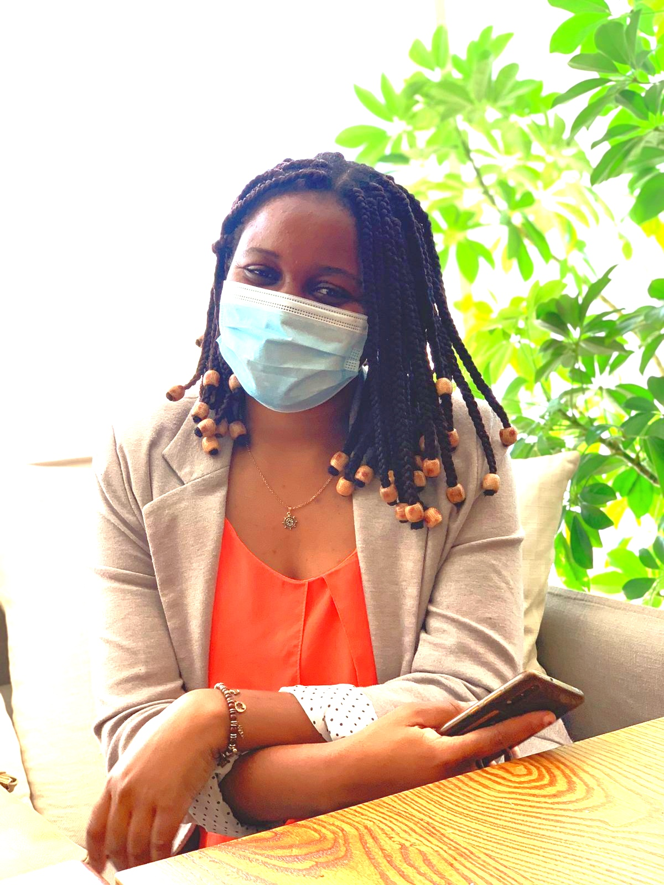

|  |
Siphiwe KanyendaMicrobiologist, Full-stack Web-developer and Entrepreneur |
I am a Microbiologist, Software engineer and Entreprenuer. I am currenlty employed at Microchem Lab-Services as a microbiologist. I completed a Bachelor of technology degree in Biomedical Technology Biotechnology and a National Diploma in Biotechnology at the Cape Peninsula University of Technology. I do possess a broad knowledge of ISO 17025, ISO 9001:2015; ISO 14001:2015 and ISO 45001). I am goal and target-centric which provides me a high level of independence and initiative. I am also a certified Software Engineer and Full-stack Web-developer with ALX and Udemy respectively.
| Excel | ⭐⭐⭐⭐⭐ | Typing | ⭐⭐⭐⭐⭐ |
| Coding | ⭐⭐⭐⭐⭐ | Web-design | ⭐⭐⭐⭐⭐ |